First of all, thank you for buying this theme. To make your experience pleasant, we've added as much info as needed in this documentation.
There are two methods to install the theme. If the normal installation method (a) is not supported by your web host, you will have to use the alternate option (b).
Important After activation, you will be presented with several plugins that you have to activate. Do not forget to activate them all or not all of the theme features will be available.
Note If you have existing content and featured images, you will have to install Regenerate Thumbnails plugin and run it from Tools > Regen. Thumbnails.
We highly recommend against using this method in production. Please only use on a an extra copy for testing or experimenting. This method
most likely will
Warning Please do not import content on a WordPress installation that already has a lot of content. Or the very least, make a backup first. A catastrophic mess can be created.
Using the new method, you can get sample content that's pretty close to the demo site. It will generate random images that are under public domain license (creative commons zero).
Tip If it fails, you will have to request your webhost to increase your PHP max_execution_time (or any other webserver timeout to at least 300 secs) and memory_limit (to at least 196M) temporarily.
This will require performing more steps and it will require extra work to make it look like demo.
For Flipmag we using some plugin for our theme make very easy and handle anyone with plugin.
We recommended that plugin
The TGM Plugin Activation class allows you to package plugins for installation with your WordPress theme, including directly from the WordPress.org plugin repository. Envato WordPress Evangelist, has recorded a great little video explaining how to use it.
If you didn't catch the link already, you can download the class from Thomas Griffin's GitHub page and start playing around with this yourself.
We prefer and recommend categories over tags, but if you wish to use tags, you can enable them from flipmag settings panel.
Setting up categories for this theme is no different than ordinary category setup in WordPress, however, we provide some additional layout settings.
Go to Posts > Categories and fill in the info required. To choose the correct layout, refer to the Demo.
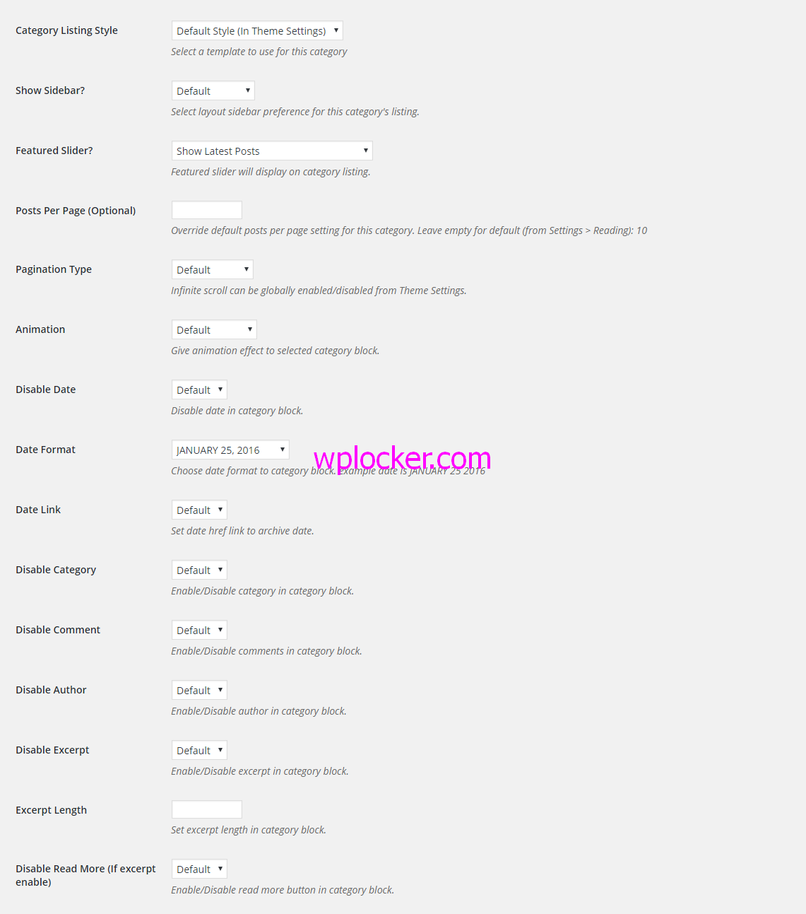
There are 20 Block and 14 options to choose from: (click to view demo for more information on each style)
This option allows you to set whether you would like to show the sidebar in the category listing or not.
Note It does not affect the "single post" view in the category. You can modify whether to show sidebar for a post or not for each post.
FlipMag supports featured sliders for categories. There are two options here:
By default posts per page setting from Settings > Reading is used. This option can be used to override that.
When block post is load with different animation style.
Enable/Disable Post date in block.
Choose date format as you want from given option.
Change archive link from year, month or post date.
Show/Hide Category on block posts.
Show/Hide Number of Comments on block posts.
Enable/Disable Post author in block.
Enable/Disable Post excerpt in block.
Enter number of length of excerpt but excerpt is enable.
Show/Hide Read More on block posts.
While the theme can function without featured images, it's highly recommended that you add a featured image to each post. This not only makes your site/blog more lively but also improves user experience.
To set the featured image, use the WordPress normal method.
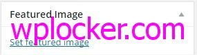
Important If you have existing content and featured images, you will have to install Regenerate Thumbnails plugin and run it from Tools > Regen. Thumbnails. Skipping this will make your existing images look out of proportions or stretched.
Image size (dimensions) will depend on what type of layout you're using throughout your WordPress installation or per individual post basis. This image will not only be used on the post, but also on the category listing pages.
Note FlipMag uses WordPress's standard cropping and resizing method.
About Retina We recommended using images of double height and width to have even your content images appear sharp on high-res devices like iPad. Read more below.
Retina images are used for hi-definition / hight DPI screens such as iPad, Macbook Retina and so on. For these devices, you need to upload images twice the recommended dimensions above.
FlipMag, when activated, informs you to install a few plugins and one of them is WP Retina 2x. Assuming you had existing images that are large enough, you can convert them to retina images from Media > Retina, after activating the plugin.
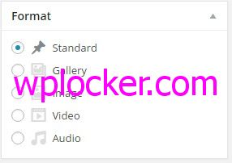
Setup your post normally and set a featured image. Copy the embed code of the video from YouTube, Vimeo or any other site that gives you video embed codes. Paste the code in the "Featured Video Code" box.
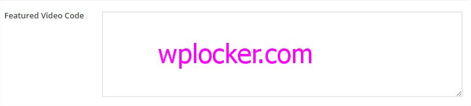
Note Videos will be resized to fit the container so you can choose a larger embed format if the video site allows you to specify size/dimensions.
FlipMag will automatically convert the first gallery inserted into a post to a gallery slider - granted "gallery" post format is checked. To use the gallery post format, same as every other post, set a featured image first.
Note To create a tiled mosaic gallery, Slim Jetpacks plugin is required.
WordPress supports embedding into posts by default. An audio player will be inserted into the post.
Image format works very similar to a standard post. Just set a featured image of a recommend size and you're done.
You will see the following post options when adding a post.
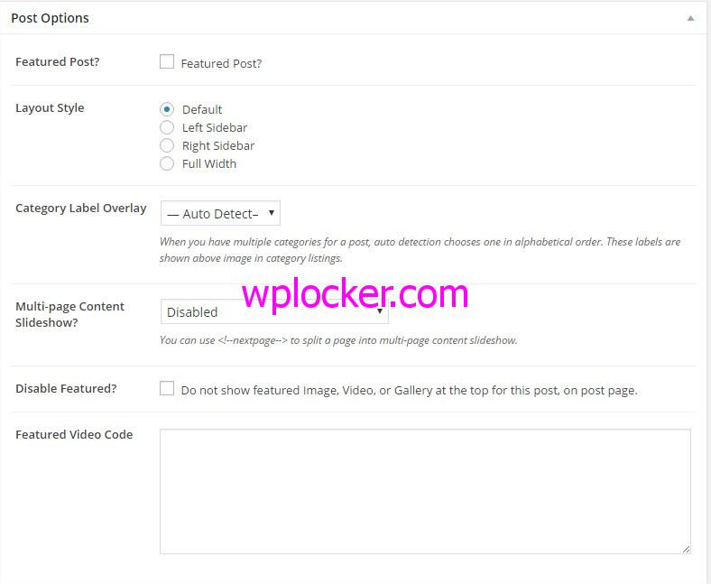
One of the unique features is a multi-page content slideshow. It's basically <!--nextpage--> feature of WordPress with enhanced functionality.
If you are new to WordPress nextpage feature, the only thing to know is that you can place a <!--nextpage--> in Text editor anywhere to split to content into multiple pages - More info here.
Once you have created a multi-page post normally, you will have to enable the slideshow feature. Follow the steps below:
<!--nextpage-->.Note It's recommended to check "Disable Featured?" for posts of this type.
There are two options available. AJAX option prevents a page refresh so the content will be loaded via AJAX. This may be good or bad depending on your personal usage.
A site looking for more advertising views will want to use the Multi-page option to register more views. Whereas, a dynamic website wishing to make things faster for users will want to use the AJAX option.
Most of the shortcodes you will need are added to the GUI Shortcode Generator. Click the "Shortcodes" button while adding a post to see a list of generator-based shortcodes. There are a few layout related shortcodes that will not be listed there.
For more info, refer to the Shortcodes section of the docs.
Creating pages is a simple process. However, the available templates and special layout based shortcodes might need a bit of explanation.
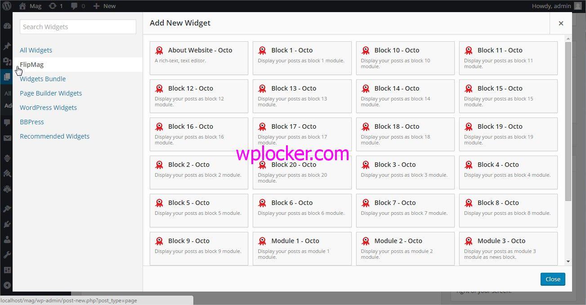
Using the page builder is recommended to create homepages. But you can use it to setup any page you like using the combination of widgets available. What's more, you can even use shortcodes within the text widget within the page builder. The only limit is your creativity!
To use the page builder:
You can either use the pagebuilder or use advanced shortcodes for everything. Not only that, you may also use shortcodes within the pagebuilder widgets such as Text or Rich Text widget.
For more info, refer to the Shortcodes section of the docs.
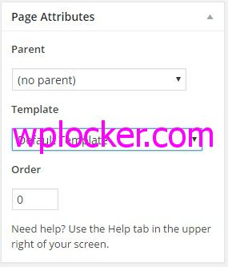
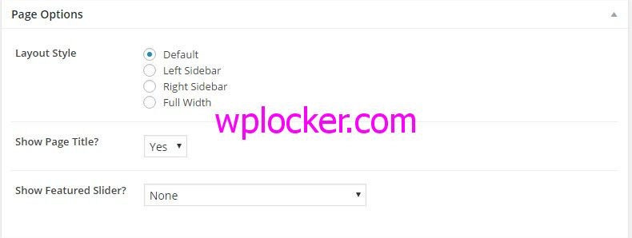
When creating or editing a page (for example, your Homepage), under the editor in Page Options, next to Show Featured Slider?, select the type of slider you wish to use.
Both the options are self-explanatory, the first uses posts you manually marked as "Featured Slider Post?" , whereas the second option shows the most recent posts automatically.
Flipmag provide 7 style of slider setting in page and category options. there are demo example link given below :
Details in Sidebars & Widgets section.
Setting up a contact page requires that you install the "Contact Form 7" (go to Appearance > Install Plugins if you have not already installed it).
First create a contact form:
Replace form content with this:
<p>[text* your-name placeholder "Your Name"] </p>
<p>[email* your-email placeholder "Your Email"] </p>
<p>[text your-subject placeholder "Subject"]</p>
<p>[textarea your-message placeholder "Your Message"] </p>
<p>[submit class:submit-button "Send Message"]</p>
Once you have created your form:
Adding Google Maps to Contact Page
To add Google Maps:
To create a page with the list of authors, simply create a normal page and use Authors List as Page Template.
There are many different widgets/blocks that can be used to construct your homepage (or any page). To create a page, please refer to Creating Pages section of the docs.
Once you have created a page that you would like to use as your homepage, follow these steps:
While you can use all the page builder blocks widgets for homepage, there are few blocks that are very suitable for homepage. We have used a combination of these in our demo.
If you have imported demo content, follow (a) else follow (b) to create a new menu.
There are two types of mega menus that FlipMag is equipped with.
The first one is used to create an organized multi-column list of links. We call it the "Links Mega Menu".
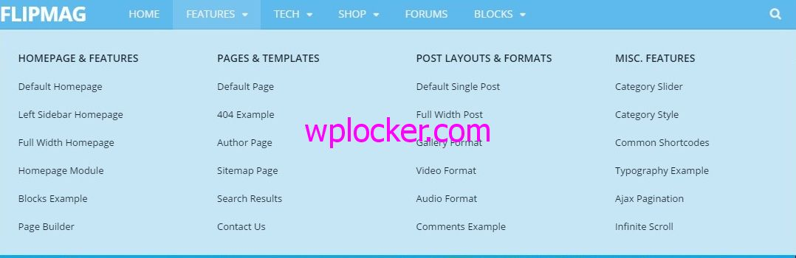
The category mega menu is a 2 column mega menu that shows sub-categories in first column, the latest featured post in the 2 column.
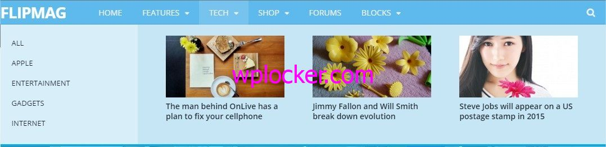
To add mega menu to your menu item:
To make mega-menus work, you have one additional step of adding sub-items.
For Category Mega Menu, add a few sub-categories as sub-items (drag/drop them under a parent category in menu). Example:
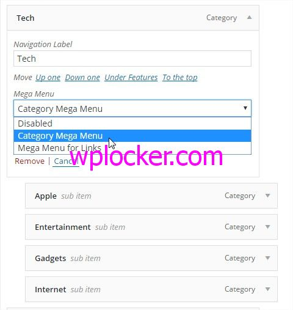
Links Mega Menu is configured by adding Custom Links to be used as headings. You can use 4 of these headings. Then, a 3rd-level sub-items are added which are displayed as links, under each heading. Example:
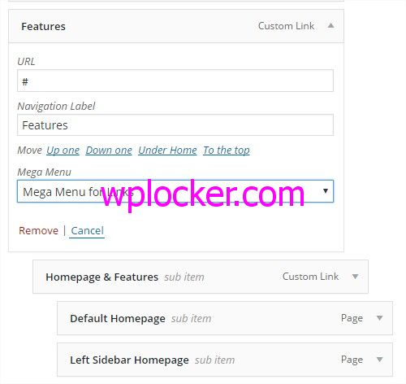
FlipMag has breadcrumbs enabled by default on all pages but the homepage (they would be redundant on homepage). The navigation breadcrumbs not only aid in navigation but also are immensely valuable for Search Engine Optimization (SEO).
The default breadcrumbs have Rich Snippets built-in so more SEO is undesirable. If you use a SEO plugin like "WordPress SEO by Yoast", please do not enable the breadcrumb functionality of the plugin.
However, if you wish to disable the breadcrumbs: (NOT RECOMMENDED)
FlipMag has an option that can make your navigation menu stick to top of the browser when your users scroll. This ensures that your navigation menu is always accessible to the user, no matter how scrolled into the page.
To enable sticky navigation:
By default, your site title will be used as a text-based logo. However, you can also use an image-based logo.
To be retina friendly (look high quality on devices like iPad), you will have to create two images of your logo. One the normal size and the second exactly double the height and width.
Ticker Bar is the area Below the header. It's enabled by default and has a News Ticker showing latest posts to the left, FlipMag Setting to Social Networks Section adding social icons to the right.
You will use the social shortcode in a widget to add your social icons.
FlipMag comes equipped with several custom widgets but also styles many of the default widgets in several locations.
If you are unable to see these custom widgets, please activate the SiteOrigin Widgets Bundle plugin.
FlipMag's left/right sidebar uses the Main Sidebar widget area. Any widgets you drag/drop in this widget area will be displayed in the left/right sidebar.
Demo uses Recent Tabs, a Text widget with latest-gallery shortcode, an Advertisement widget, and the Latest Reviews widget.
FlipMag is fully compatible with all of the custom sidebars plugins available for free. Custom sidebars allow you to change the right sidebar (for example) to display different widgets on a specific category, post, or page.
If you wish to use custom sidebars feature, we recommend the Custom Sidebars plugin. It's an extremely powerful and flexible free plugin. It's recommended by the Theme to be installed but if you haven't installed it yet, install it from Appearance > Install Plugins (not visible if plugin already installed).
To use this plugin, go to Appearance > Widgets and Create a new sidebar. After you have created a Custom Sidebar, you will have to to go to Appearance > Widgets, click to expand "Main Sidebar", and tick "Allow this sidebar to be replaced".
Next, simply add/edit a post or page and you should have a Sidebars box at the right side where you can select your sidebar from a drop-down list.
If you're using older than v2 of Custom Sidebar, go to Appearance > Custom Sidebars, under Replaceable Sidebars select Main Sidebar and Save.
As you may have noticed, there are other boxes after step 3 such as "Tag archives", "Author archives", "Search results page". You can use these to set a custom sidebar for a tag, author page, or the search results page respectively.
FlipMag comes with a footer that's split into two sections, the larger (upper) footer and the sub footer. upper footer are widget areas that can be modified as you wish and lower footer updated in FlipMag Setting > Footer.
Please ensure that you have already acquainted yourself with general widget setup via the sections above. This section assumes you already know how to add widgets to widget areas.
By default, you're supposed to use 4 widgets in the footer. However, should you wish to go advanced, you may add a Text widget and use Columns Shortcode to create as many columns as you want with your own content.
Recommended Widgets:
While the above is a recommended list, you are free to use many of the default widgets in the footer, like Calendar, Image widget etc.
The subscription option shown in the Demo is simply a Feedburner Shortcode. To setup, in your description box of About widget, enter the following shortcode:
[feedburner user="FEEDBURNER USERNAME" heading="Subscribe to our newsletter:" label="Email Address" button_text="SUBMIT"]
Lower footer is best used for simple copyright message. For a simple copyright message, just add one line message from FlipMag Setting > Footer for left side area and for right side area you can enable your social icons from same section.
Both the color/style and typography settings are located in FlipMag Settings.
Note In case you mess up, you can always click Reset Colors. DO NOT click Reset All Settings as that will erase all other settings too.
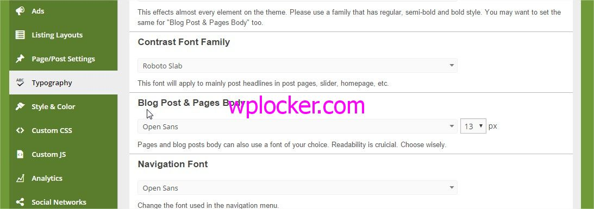
For typography, we use Google Web Fonts. Many of the typography elements have suggested font families or fonts.
Non-latin script based languages will not display correctly when using the default fonts. This is because, to limit size, only latin charset is included by default.
To get the fonts to display correctly, you will have to tick the character sets for your language. Some latin-based languages required Latin Extended.
Note If all else fails, you can use the System Fonts show towards the end of the drop down choices.
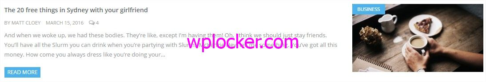
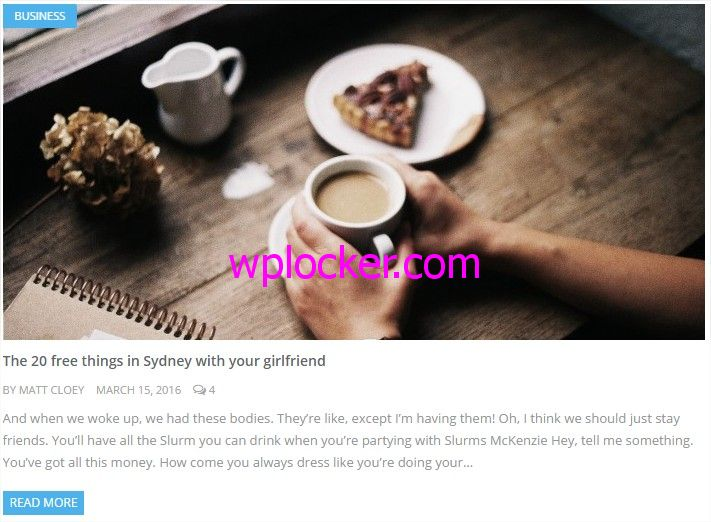
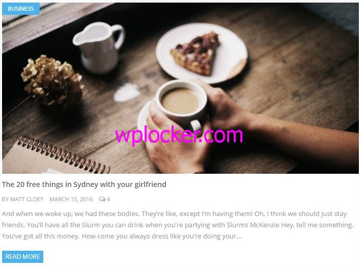
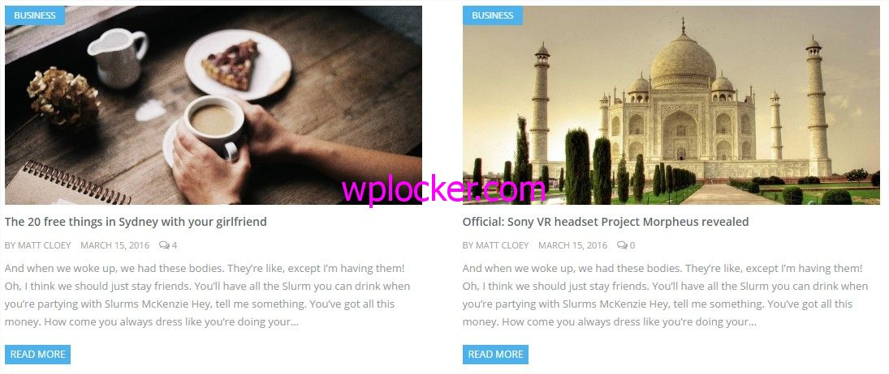
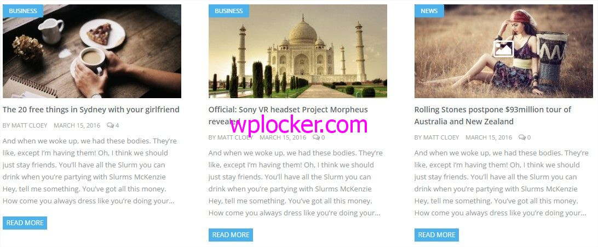
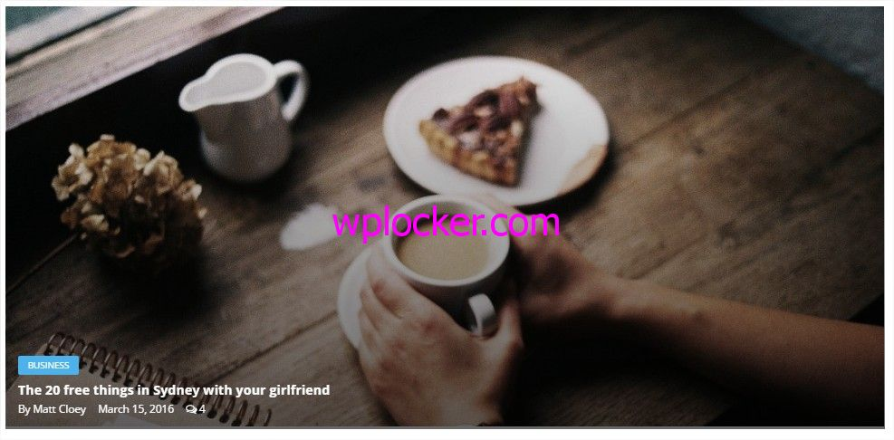
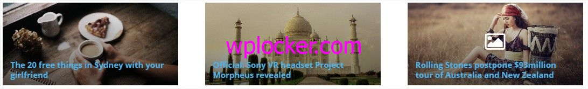
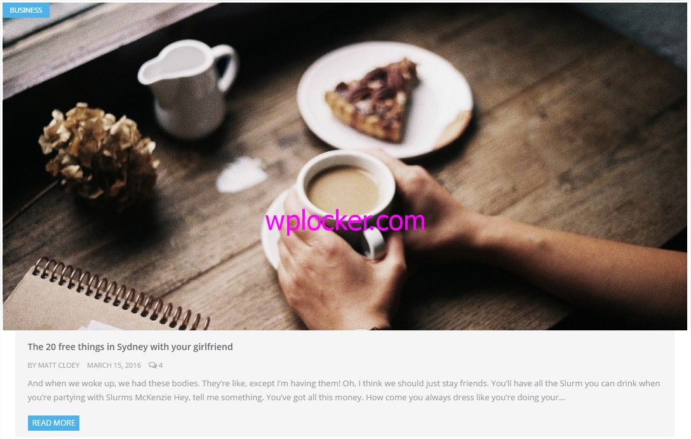
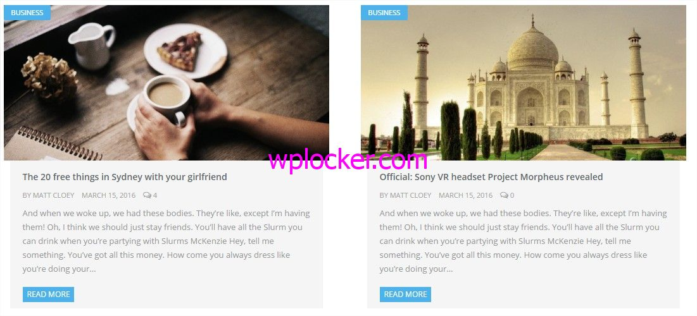
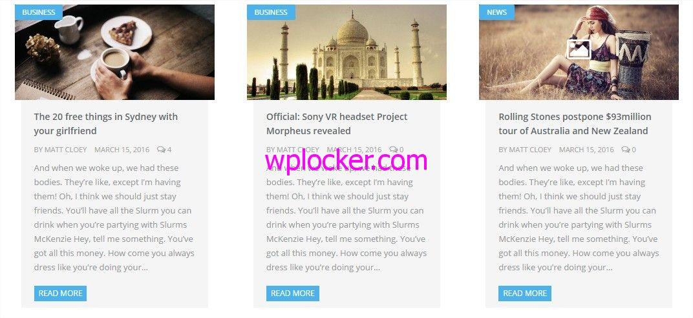
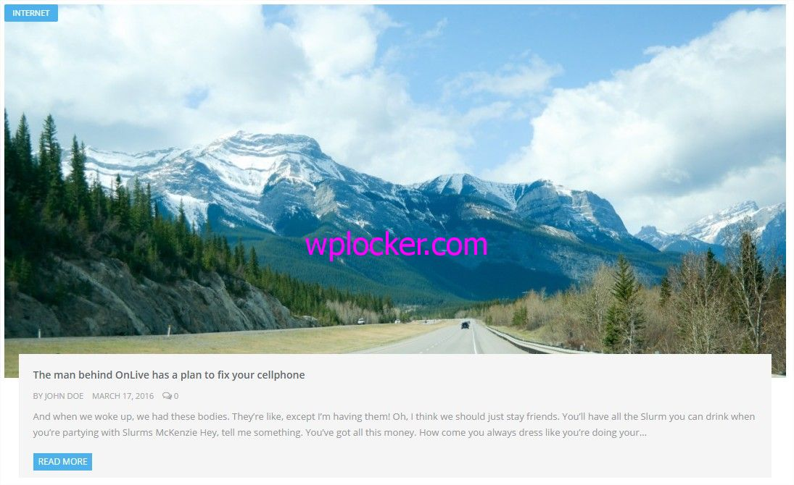
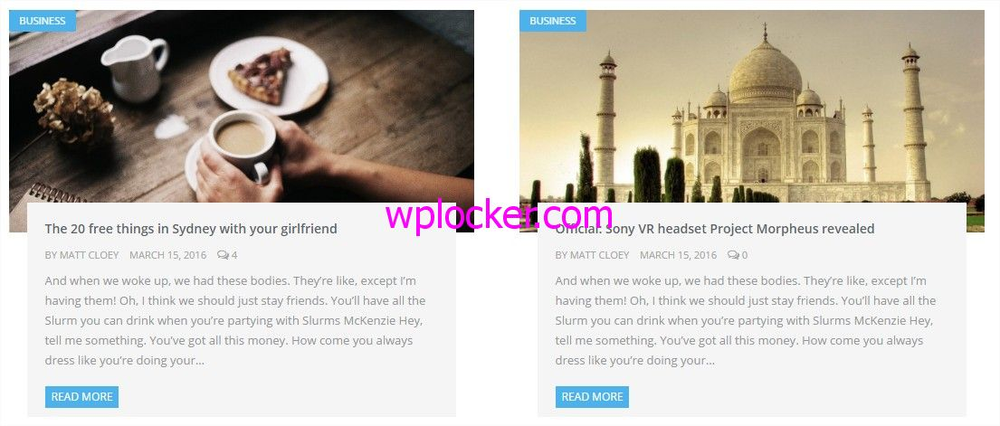
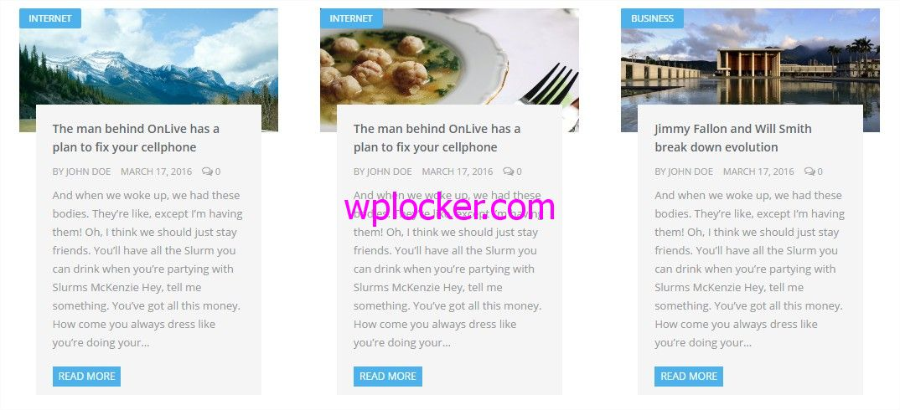
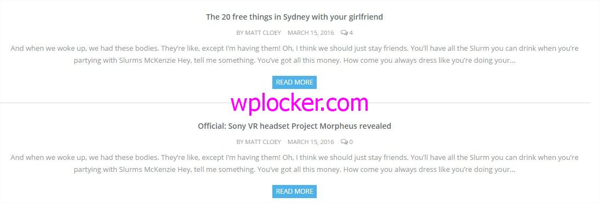
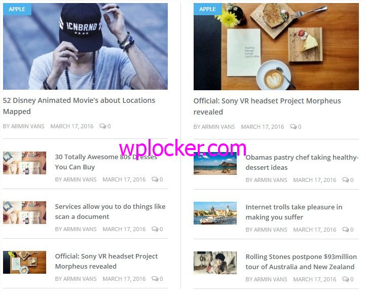
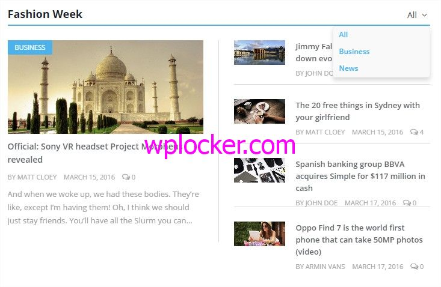
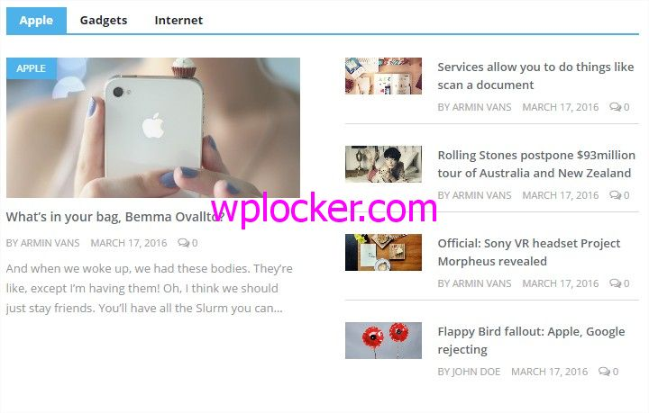
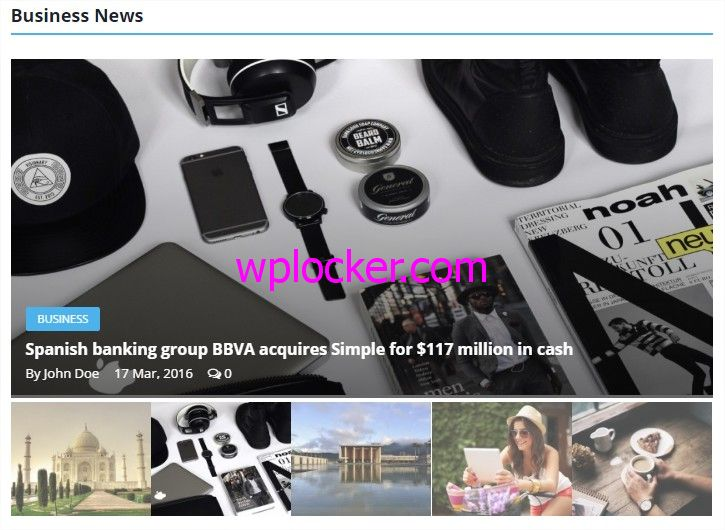
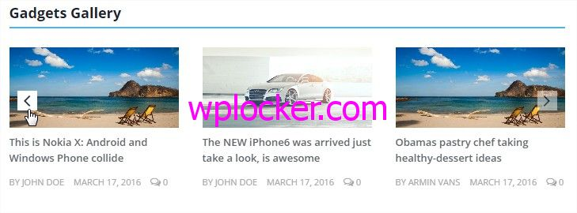
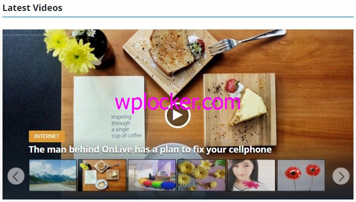
To access these settings in question, go to Appearance > FlipMag Settings. Each setting includes relevant information on the right side about what it does making everything very self-explanatory.
These favicons are good to have when someone bookmarks your site. Both of these settings are located in Header Settings near the bottom.
Use a 32x32 .ico file for your favicon and 144x144 .png file for mobile icon. Mobile icon will be used when users add your website as a shortcut on mobile devices like iPhone, iPad, Android etc.
While we prefer categories over tags, some of our users might want to use both at the same time. To enable tags, go to Page / Post Settings and set Show Tags to Yes.
Please do not edit .css files directly. When there is a theme upgrade, you will lose any custom edits you made. Rather, we recommend that you use the built-in custom CSS setting to extend the default style. This CSS will be preserved between upgrades.
Go to Custom CSS, enter your desired CSS and click Save Settings.
Before you make any massive like in colors, you may wish to create a backup. Just click Download Backup to get a backup. You can later restore it using the Restore/Import feature.
FlipMag can be used with WooCommerce 2.1+ to setup an eCommerce Shop with fully compatibility.
Note This section assumes you already have WooCommerce Plugin activated. If you do not yet know how to use WooCommerce, please use WooCommerce's Documentation to familiarize yourself.
FlipMag uses the WooCommerce's default sample content. Follow the official WooCommerce Dummy Data guide.
Please note, on demo, for the Shop Sidebar example, we're using a custom sidebar with two widgets: WooCommerce Price Filter, and WooCommerce Top Rated Products.
FlipMag fully uses WooCommerce's internal pages. When WooCommerce is activated, it will create Shop, Cart, Checkout and My Account pages. These are normal WordPress pages that you can edit just like any other page.
By default, the WooCommerce integration will have full-width layout. If you wish to enable the "Left Sidebar" or "Right Sidebar":
To replace the right sidebar with a custom sidebar for your Shop, follow the steps below.
Sometimes you may wish to disable the sidebar for only some pages. You can disable the sidebar selectively for pages.
Tip The page named "Shop" is used for all product listings so you may change its sidebar settings to affect all product listing pages/archives.
FlipMag can be used with bbPress with fully compatibility.
Note This section assumes you already have bbPress Forum Plugin activated.
FlipMag's default bbPress layout is based on traditional forum hierarchy. You need to create categories and forums.
<i class="fa fa-user"></i>Please make sure to sure Custom sidebar is activated..
Please go to FlipMag Seeting > Appearance > Widgets > Create new sidebar or existing sidebar( make sure you activated custom sidebar plugin ) then click on clicking on the "Sidebar Location" link of the custom sidebar and then selecting "Forum Archives" in the Archive Types as displayed in the following screenshot.
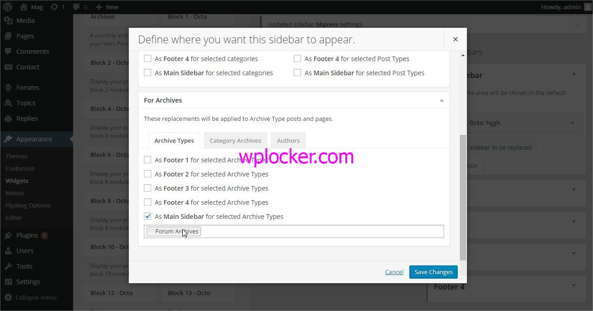
If you want to display the custom sidebar on single forum pages like following
then you can do so by selecting Forums as Post Types in the Sidebar Location pop up as shown in the following screenshot.
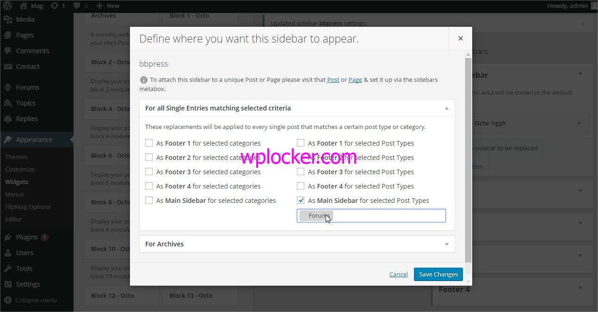
To display custom sidebar on specific forum, you have to select the custom sidebar in the Sidebars metabox displayed in the Edit Forum screen.
FlipMag comes with .po and .pot file included under the languages folder. To translate:
define('WPLANG', 'en_GB');. In this case, you would save your file as en_GB.po.After translating, you may wish to use the correct locale to translate and localize your WordPress installation completely. Refer to Installing WordPress In Your Language at WordPress Codex to learn how to.
For languages that read from right-to-left unlike English which is left-to-right, FlipMag will automatically switch to an RTL style, as long as you it's in your language and uses the correct locale (as explained above).
For multilingual sites, the best way is to purchase the WPML Plugin. FlipMag is compatible with the plugin.
When using WPML, we recommend you use Display the language switcher in the WP Menu option and select Main Menu. This will display the languages drop down menu in the main navigation menu.
If you are looking for layout customizations beyond the Style & Typography settings built into the theme, it's important to judge the nature of customization.
If it's a simple layout change, it's very likely achievable by using different Shortcodes or Custom CSS. However, for something not possible using either of these, a child theme is recommended.
WPBeginner has a great article on How to create a
WordPress Child Theme. Use Template: flipmag instead of twentyeleven.
Also, use @import url("../flipmag/style.css"); in the CSS file to import parent stylesheet.
FlipMag supports the usage of shortcodes in Pages, Posts, Page Builder Text/Rich Text widgets, Advertisement, About, and Text widgets. Thereby, giving your maximum flexibility. Please note when creating a post or a page , most of these shortcodes are accessible via the Shortcodes button in the Visual editor.
Post shortcodes are accessible via the GUI Shortcode Generator. Simply click the Shortcodes drop-down in the editor (make sure you're on Visual editor) and select the relevant shortcode to be guided.
If you wish to manually use the shortcodes (advanced users only), the guide below offers some insight into each.
[pullquote]quote here[/pullquote]
[dropcap]A[/dropcap]
To use the square version:
[dropcap style="square"]A[/dropcap]
[button link="http://somewhere.com" color="white, blue, black, green, red, yellow, or custom hex code" text_color="optional hex color" size="small, medium, or large"]Label[/button]
[tabs] [tab title="Title 1"]Content 1[/tab] [tab title="Title 2"]Content 2[/tab] [/tabs]
[accordions] [accordion title="Title 1" load="show"]Content 1[/accordion] [accordion title="Title 2" load="hide"]Content 2[/accordion] [/accordions]
Tip load="show" defines to show this accordion (expanded) by default.
[toggle title="Title 1" load="show"]Content 1[/toggle] [toggle title="Title 2" load="hide"]Content 2[/toggle]
Tip load="show" defines to show this accordion (expanded) by default.
[list style="arrow, check, edit, folder, file, or heart"] [li]Item 1[/li] [li]Item 2[/li] [/list]
Custom lists support all of the icons from FontAwesome. Simply type it in style argument without the fa- (ex. arrows for fa-arrows).
Columns are a border-line layout shortcodes. While they're also often used in posts, they're covered below.
This section is only for advanced users. Use page builder if you are uncomfortable with using shortcodes.
The column shortcode is a special shortcode. Sample shortcode:
[columns] [column size="1/4"]Column 1 goes here[/column] [column size="1/4"]Column 2 goes here[/column] [column size="2/4"]Column 3 goes here[/column] [/columns]
The [column] shortcode has the following variables/options:
size="one-fourth".text_align="right".[separator type="space" /]
WordPress core supports embedding much of media out of the box.
Galleries were already covered in Gallery Post Format section. For advanced usage, refer to Gallery Shortcode section in WordPress docs.
To show a video from YouTube or Vimeo for example, you would just copy the link and paste it into your post content.
Checkout the Embeds section of WordPress's docs to find the supported sites.
Should that fail, you can use the embed shortcode as [embed]https://www.youtube.com/watch?v=IiCmEzjV3_Y[/embed].
Starting WordPress 3.6, you can self-host audio or video easily. However, not many webhosts will allow you to upload files of large size.
For advanced usage, check out the Audio and Video sections of the WordPress docs.